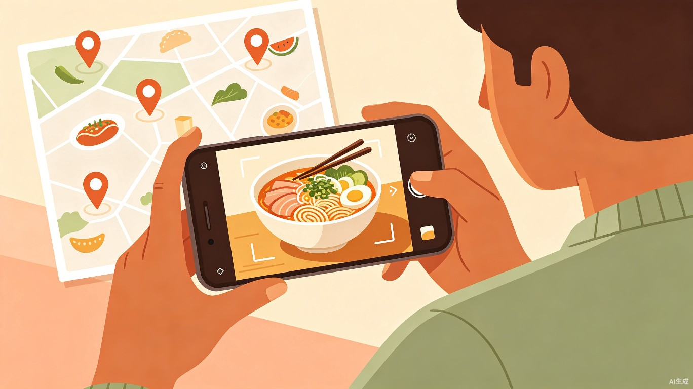
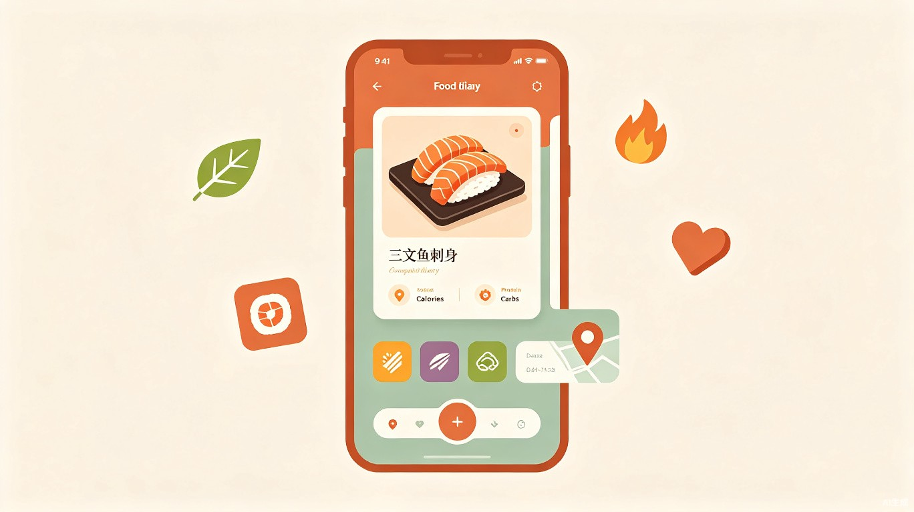
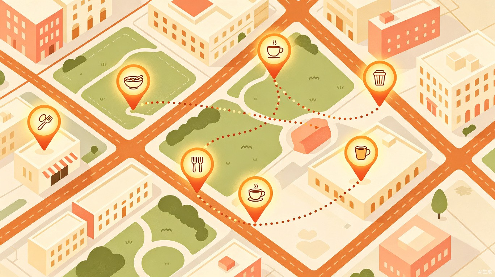

AI 智能美食日记 — 拍照即记录，让每一顿美食都成为味觉旅程的坐标

每天吃到的美食值得被记住，但记录它们的体验远谈不上愉快。以下是美食爱好者们每天都在面对的真实困境。
传统方式需要手动输入菜名、地点、时间，操作繁琐，坚持不了几天就放弃。一顿饭记录下来可能比吃这顿饭还累。
健身 App 的饮食模块只关心卡路里数字，完全忽略了食物的色香味与就餐体验，记录变成了一种"任务"而非享受。
朋友圈、小红书、大众点评上的美食分享散落在不同平台，无法形成一份完整的个人美食档案，回看时无从找起。
吃过的好店记不住位置，旅行时的美食探索没有地图记录，那些"下次还来"的承诺最终被遗忘。
「味记」是一款基于 AI 图像识别的美食日记 App。你只需拍一张照片，AI 即可自动识别菜品名称、估算热量和营养成分，并生成一张精美的美食日记卡片。App 还会自动将打卡地点标记在个人美食地图上，让你回顾每一顿值得记录的味觉旅程。

对准美食拍一张照片，AI 自动识别菜品名称、菜系分类，准确率覆盖主流中西餐及地方小吃，无需手动输入任何文字。
基于识别结果，自动估算每道菜的热量、蛋白质、碳水、脂肪等营养成分，健身人群可直观查看每日摄入情况。
每次打卡自动生成一张精致的美食日记卡片，包含菜品照片、名称、营养数据、地点与时间，可直接分享到社交平台。
所有打卡地点自动标记在地图上，形成专属的"味觉版图"，旅行归来即可回顾一座城市的全部美食足迹。
味记为三类核心用户设计了差异化的使用场景，让不同需求的人都能找到自己的用法。
外出探店时拍一张照片完成记录，自动生成精美的美食日记卡片，分享到朋友圈和小红书，打造个人美食 IP。
每餐拍照即可查看热量和宏量营养素分布，配合周/月摄入趋势图，让饮食管理可视化、不再枯燥。
每到一个新城市，打卡当地美食自动标注地图，旅行结束后收获一张完整的"城市美食地图"，成为珍贵的旅行记忆。
味记最具情感价值的功能——将每一次美食打卡转化为地图上的一个坐标。日积月累，这张地图将成为你的"味觉人生轨迹"。

市面上的美食记录工具各有侧重，但没有一款将「拍照识别 + 营养追踪 + 社交分享 + 美食地图」四个维度融为一体。味记填补了这一空白。
| 功能维度 | 味记 | 大众点评 | MyFitnessPal | 微信朋友圈 |
|---|---|---|---|---|
| AI 拍照识别菜品 | 支持 | 不支持 | 手动搜索 | 不支持 |
| 营养/热量估算 | 自动估算 | 不支持 | 手动录入 | 不支持 |
| 美食日记卡片 | 自动生成 | 评价图文 | 不支持 | 手动配文 |
| 个人美食地图 | 自动标记 | 足迹功能 | 不支持 | 不支持 |
| 社交分享 | 一键分享 | 评价分享 | 社区动态 | 朋友圈 |
| 记录效率 | 3 秒拍照 | 需写评价 | 需手动搜索 | 需编辑文案 |
中国美食记录与健康管理赛道的用户规模持续增长，味记精准切入了"美食"与"健康"的交汇地带。
拍照即记录，从「3 分钟手动输入」变成「3 秒一键生成」。AI 承担了所有繁琐的信息提取工作，用户只需享受美食。
美食打卡 + 社交分享 + 个人地图，兼具工具属性与传播力。天然的社交裂变场景，UGC 内容反哺社区生态。
将日常饮食变成可视化的美食人生地图，创造生活仪式感。每张日记卡片都是一段味觉记忆的封装。
味记正在让美食记录这件事变得前所未有地简单。拍一张照片，开始你的味觉旅程。
了解更多